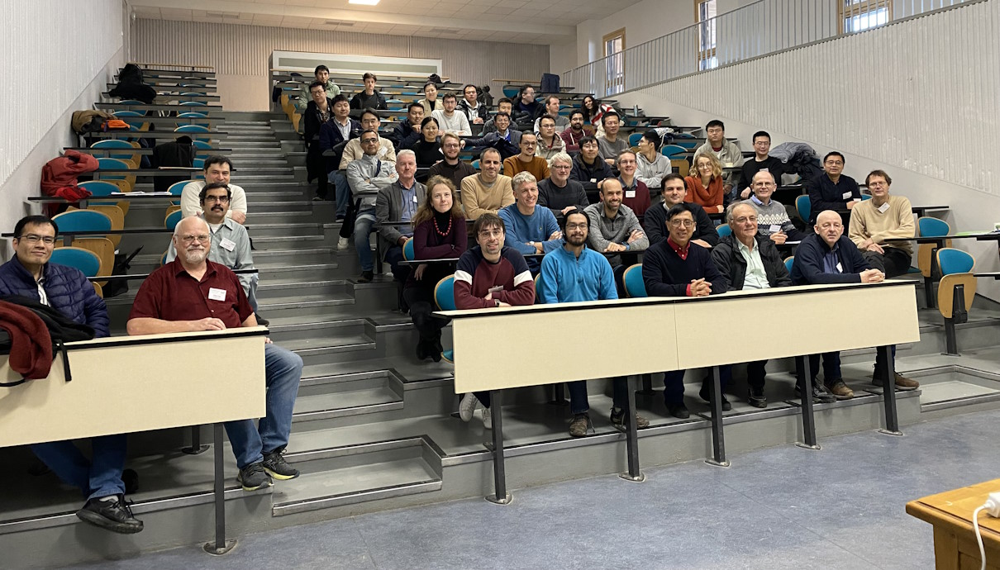

Blog of Matthew Daws
Distinguishable
A little mathematics: I have claimed the following in a number of talks, hence perhaps a proof is called for. Given two Density Matrices \( \rho_1, \rho_2 \) (so positive-semidefinite, trace one matrices) we say that the associated quantum states are distinguishable when \( \newcommand{\Tr}{\operatorname{Tr}}\Tr(\rho_1 \rho_2) = 0 \). Let \( T \) be a quantum channel; we are interested in when \( T(\rho_1) \) and \( T(\rho_2) \) are distinguishable.
Claim: \( T(\rho_1) \) and \( T(\rho_2) \) are distinguishable if and only if \( \Tr\big(T(|\xi\rangle\langle\xi|) T(|\eta\rangle\langle\eta|) \big)=0 \) for each \( \newcommand{\im}{\operatorname{Im}}\xi \in \im(\rho_1) \) and \( \eta \in \im(\rho_2) \).
Read More →It's all operational
I'm currently at the Isaac Newton Institute where I am a co-organiser of the Quantum information, quantum groups and operator algebras 5-week programme. We're about half-way through now, and so far it's been a really fun event. We started with a "school", and then went into the programme proper, while still encouraging visiting researchers to give talks, ideally explaining things slowly and giving background, rather than straight up seminars (which come at the end, when we have a conference).
I feel like I've learnt a huge amount. While attending a traditional conference is good, I often find myself very busy, listening to lots of talks, and the pressure speakers feel to be impressive, to give all their results, means that it can be hard to get into the details of people's work. (Which comes later, when you read the papers, but that requires time, usually lacking at the meeting itself.) With being at the programme for longer, and having less pressure from talks, it feels like I've had more time to think about ideas, and to talk informally with people about those ideas. In fact, I'm not sure I've felt this engaged with the research area for really quite some time.
In Quantum Information, I've come across the word "operational" quite a bit, while never really knowing what it means. I took the opportunity to ask, and here paraphrase the answer, at least as I understand it. In Mathematics, we are used to just making a definition, and then working with it. (This of course obscures a huge amount of subtlety: at least in private, mathematicians argue endlessly about definitions, sometimes yes in a silly way, but mainly because we seek definitions which are beautiful, which capture the correct behaviour, that generalise well, which are useful. These are all subjective of course.) Sometimes these definitions are meant to capture some real-world behaviour or situation. "Operational" means some definition which comes from a real-world interpretation of the mathematics.
Read More →Overleaf and Git
More of a note to myself than anything else. Lancaster University has recently obtained a uni-wide Overleaf license. Overleaf is of course the online LaTeX editing system (as an aside, I didn't realise until now that the underlying web-app is Open Source). I haven't used Overleaf much, as I don't like the idea of needing a stable internet connection to work on my LaTeX files, and have a reasonable system going with MikTeX and VSCode with the LaTeX plugin.
One advantage, however, is collaboration, especially as I can't convince collaborators to work with GitHub. The license is needed to have more than one collaborator, but it also gets you Git integration. Basically, the Overleaf project will act as a Git repository which you can push/pull from (but not branch; still, if I get a collaborator who is up for using branches, then (a) we can just use GitHub; and (b) I need to worry about why my Mathematics article is some complex...)
Read More →Travelling and a New Year
Somehow it is 2024 already. I spent the week before Christmas at a pleasant conference in Besançon, France. A photo of us all in the initial lecture theatre:

Read More →Cheap analysis
This is a follow-on to an older post prompted by a comment from Yemon Choi (an old friend who is now a colleague). There are of course many examples of monotone Galois connections in Functional Analysis. Here is one example which I like.
Let \( E \) be a Banach space. Let \( \mathcal X \) be the collection of all linear subspaces of \( E \), ordered by inclusion. Let \( \mathcal Y \) be the collection of all linear subspaces of \( E^* \) (the dual space of all continuous linear functionals) ordered by reverse inclusion.
Given \( F\in\mathcal X \) we define \[ \mathcal L(F) = \{ f\in E^* : f(x)=0 \ (x\in F) \} \in \mathcal Y, \] the annihilator of \( F \), easily seen to be a subspace. If \( F_1 \leq F_2 \) then \( F_1 \subseteq F_2 \) and so \( \mathcal L(F_1) \supseteq \mathcal L(F_2) \) (if \( f \) vanishes on \( F_2 \) it will vanish on \( F_1 \)). So \( \mathcal L(F_1) \leq \mathcal L(F_2) \) and \( \mathcal L \) is order-preserving.
Similarly given \( F\in\mathcal Y \) define \[ \mathcal R(F) = \{ x\in E : f(x)=0 \ (f\in F) \}\in \mathcal X, \] the pre-annihilator of \( F \). This is again an order-preserving map.
Read More →From pinchings to quantum colourings
Finally, I can combine the last post with a post 3 ago. This argument is from a paper of Elphick and Wocjan, attributed there to Roberson.
Fix a graph \( G \) with adjacency matrix \( A \).
Read More →Theorem: Let \( \mathcal C \) be a pinching on \( \mathbb M_n\otimes\mathcal B(H) \) with \( \mathcal C(A\otimes 1_H)=0 \) and \( \mathcal C(D\otimes 1_H)=D\otimes 1_H \) for each diagonal matrix \( D \). Then \( \mathcal C \) arises from a quantum colouring of \( G \), in the manner described before.
Quantum chromatic numbers
Continuing from the last post I want to now consider the Quantum Chromatic Number of a graph. These ideas arose from Quantum Information Theory, which explore how quantum entanglement can be used in certain two-person "games", which are very similar to Interactive proof systems. While the motivation can be a little hard to explain, the resulting mathematical formalism is straightforward.
Definition: A quantum \( c \)-colouring of \( G \) is a collection of orthogonal projections \( \{P_{v,k} : v\in V_G, k\in [c] \} \) on some Hilbert space \( H \) (usually assumed finite-dimensional) such that:
- \( \sum_{k=1}^c P_{v,k} = 1_H \) for each \( v \);
- \( P_{v,k} P_{w,k} = 0 \) for each \( k \) and each edge \( v\sim w \) in \( G \).
There is a more complicated (but motivated) definition in [Cameron et al.] (see references below) where the reduction to this definition is essentially shown Proposition 1 and the later observations. It is also shown there that, when \( H \) is finite dimensional, we can always assume that each projection has the same rank (though this is sometimes not natural.) The following is the same spectral bound which we discussed before, but now for the quantum chromatic number \( \chi_q(G) \), the least \( c \) for which \( G \) has a quantum \( c \)-colouring.
Read More →Theorem: [Elphick-Wocjan] \( \chi_q(G) \geq 1+\frac{\lambda_1}{-\lambda_n} \).
Spectral bounds on the chromatic number
Recently Clive Elphink gave us a nice seminar where he discussed some of his "conjectures in spectral graph theory". Clive has an interesting history: after a career in business, he is now semi-retired and returned to research mathematics. By his own admission, he is more on the experimental side, and his talk said almost nothing about proofs. Here is a old result in this area:
Theorem [Hoffman]: We have that \( \chi(G) \geq 1 + \frac{\lambda_1}{-\lambda_n} \).
I explain the notation shortly, but in words, this result relates a vertex colouring of a graph to the eigenvalues of the adjacency matrix. To me, this seems hugely surprising, as why would the spectrum of \( A \) have anything to do with a vertex colouring? I want to explain the elegant arguments of Elphick and Wocjan, and also some generalisations to quantum colourings (in part 2).
Read More →